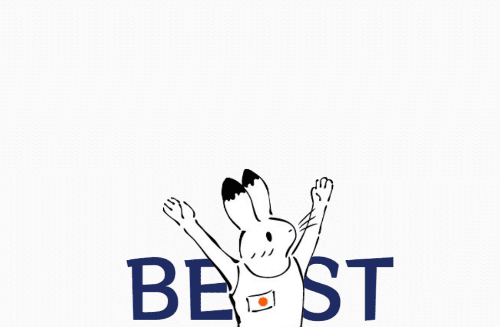
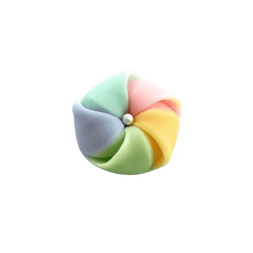
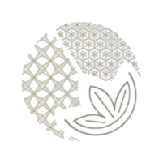
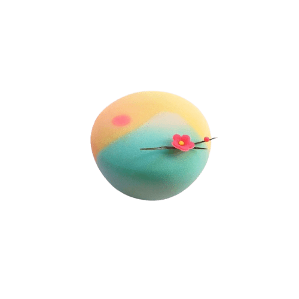
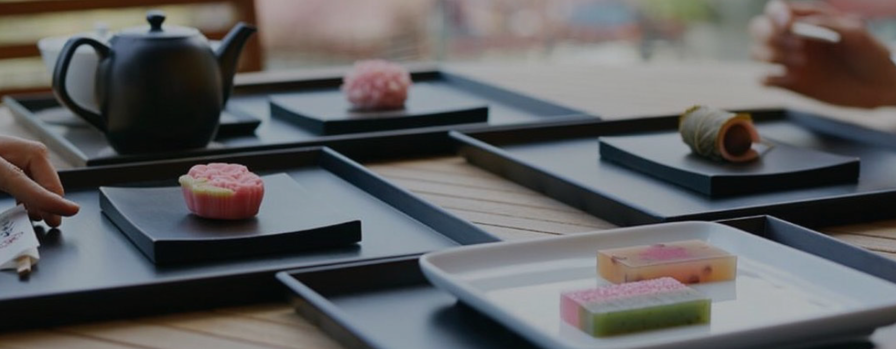
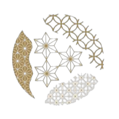

每一品，皆承載著對自然的敬畏與極致手藝的講究

職人手心溫度成型，每一顆皆是獨一無二的四季工藝品。

嚴選日本進口特選白豆沙與在地天然食材，無人工化學添加。

順應二十四節氣遞變，推出當季最具代表性的季節限定點心。

精心設計的和紙竹籠包裝，完美展現優雅尊貴的送禮心意。
品味墨香與豆甜的精緻交織
「歡迎光臨饈菓子！我是店小狐 Bobo。點選下方選項，讓我為您推薦今日最契合您心情的精緻點心與茶席搭配吧！」

順應您此時此刻的直覺，尋找最相融的和風雅緻。



「饈」意指最尊貴珍稀的珍饈美味，亦寄託了我們對每一枚菓子的敬意。 在「饈菓子」的工坊裡，我們尊崇自然四季節令。從春季粉嫩多汁的草莓大福、夏季晶瑩剔透消除暑意的羊羹、秋季豐饒甘甜的栗子點心，到冬季如粉雪輕裹的和菓子，每一枚皆是職人傾注心魂，歷經多道繁複手工揉捏、壓紋、塑型而成。
我們堅持不添加任何化學色素防腐劑，採用日本傳統精製白豆沙與頂級葛粉，完美呈現天然食材細膩的沙感與彈性。 一茶、一菓子，在喧囂的世界裡，為您安放一片沉靜優雅的和風一隅。


茶袋目前是空的呢...
快去挑選一些精緻點心吧！